Video Production Workflow Template Updates
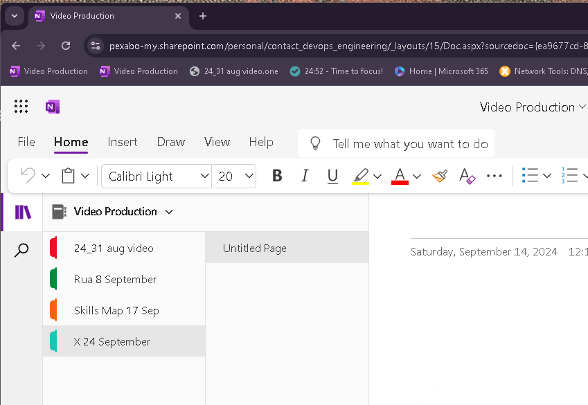
PreProd
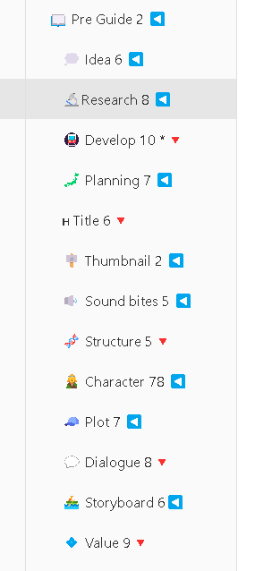
Value Lowered
Screen play into Preprod
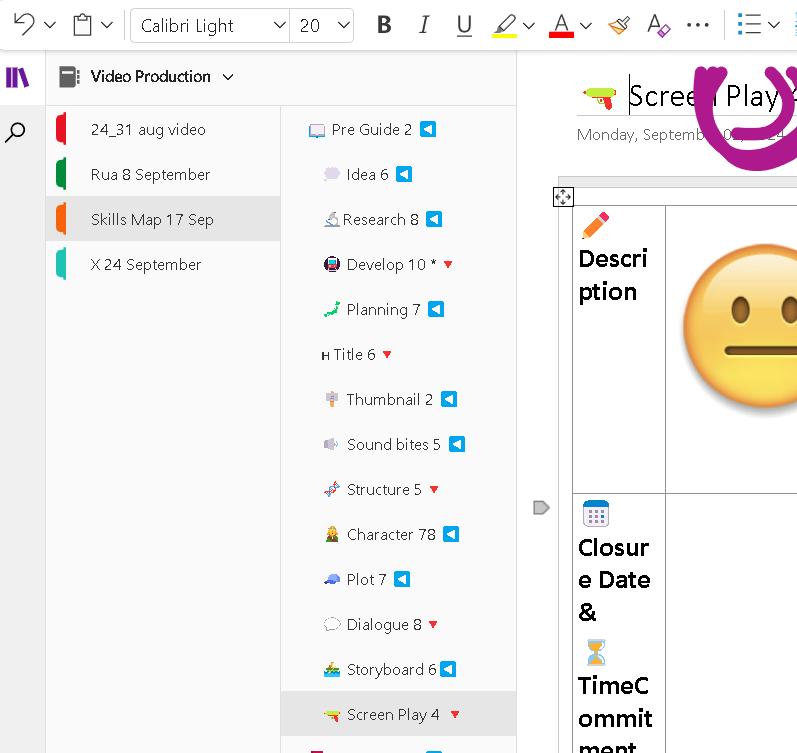
Dialogue is diverge as i hot the weeks dialogues there
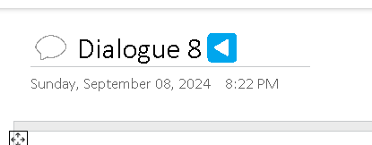
Replace and go over with the team members > explain and record what you want to record dor the week
Open 2 and move from one to other
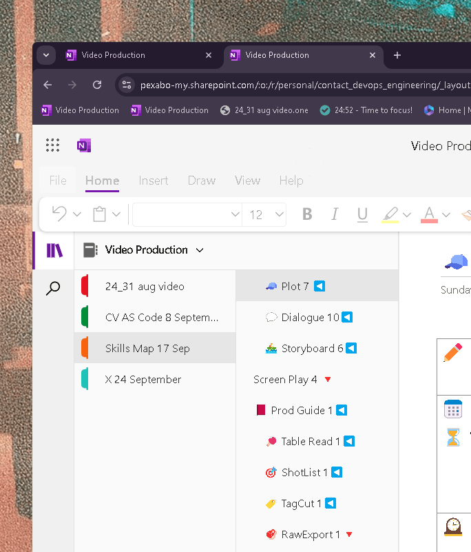
Title is found in the later stage of the process
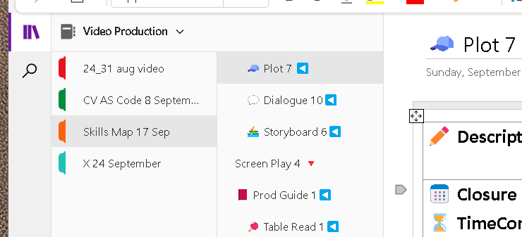
Master Template
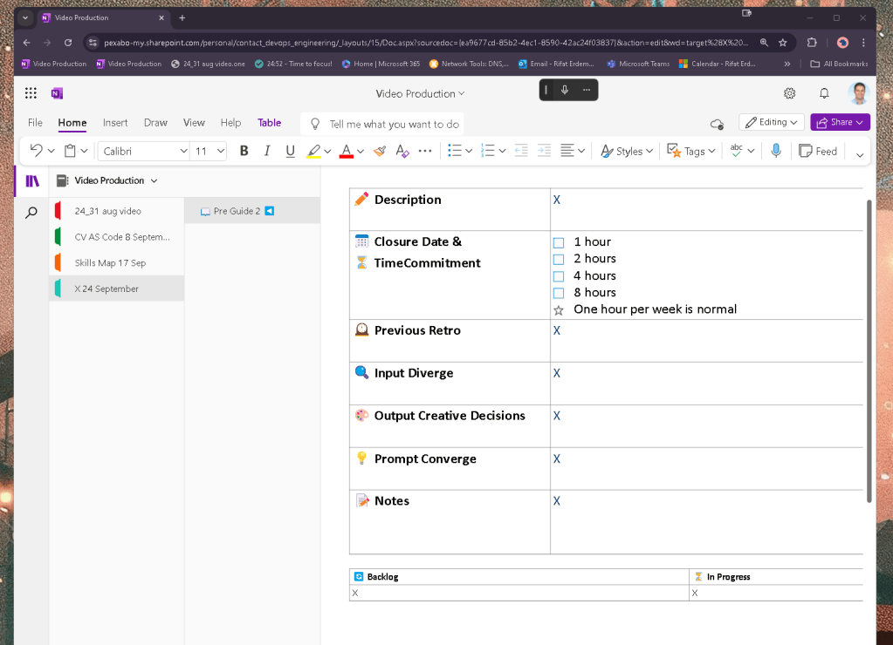
Pen Needs a Line
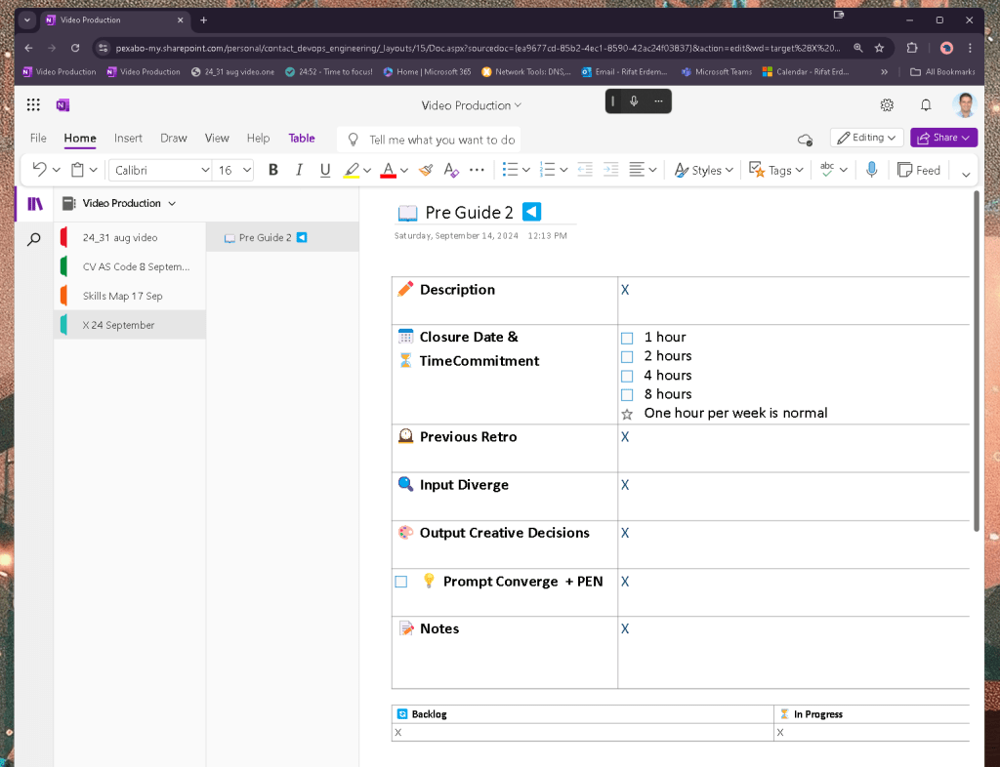
Weekday mapping
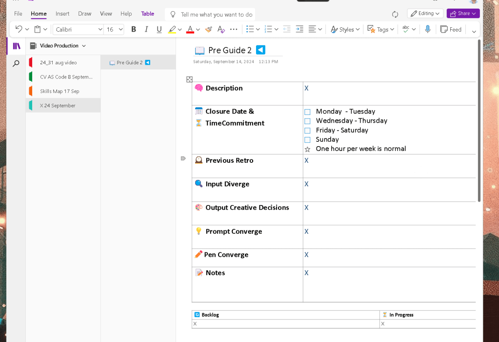
Screen Play as prepred converge part
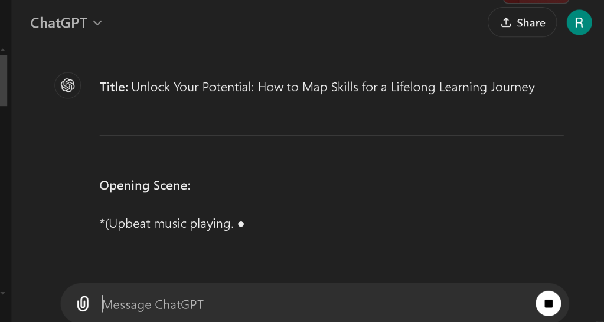
Move the latest to here as the screen play format
Added the screensplays on both and moving inside
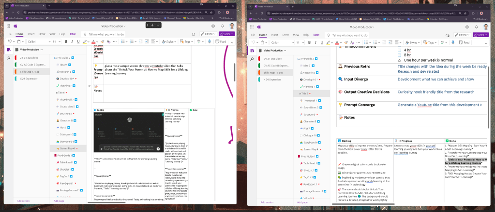
limbic system move and tea time >>> come back and go one by one
Read it all
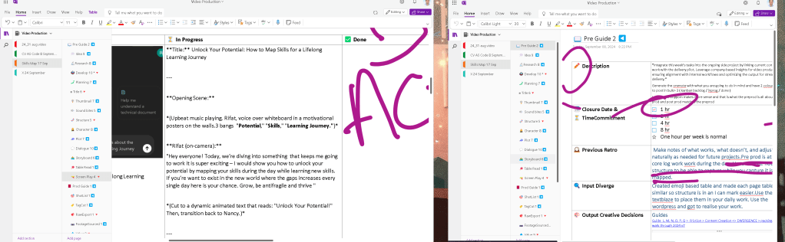
Share it with others
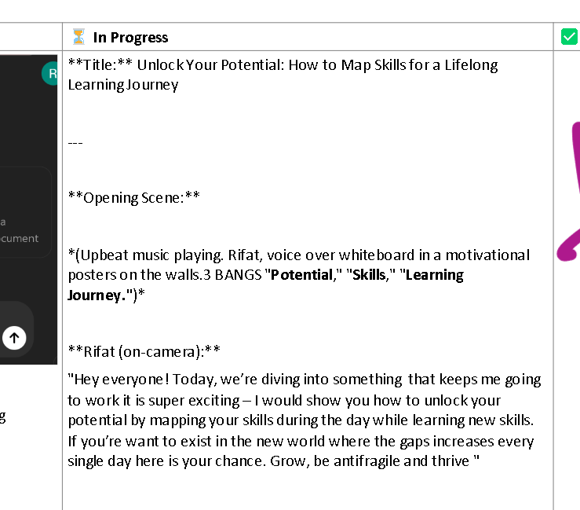
Wide screen to move it
Show the main parts into the screen play not all the parts
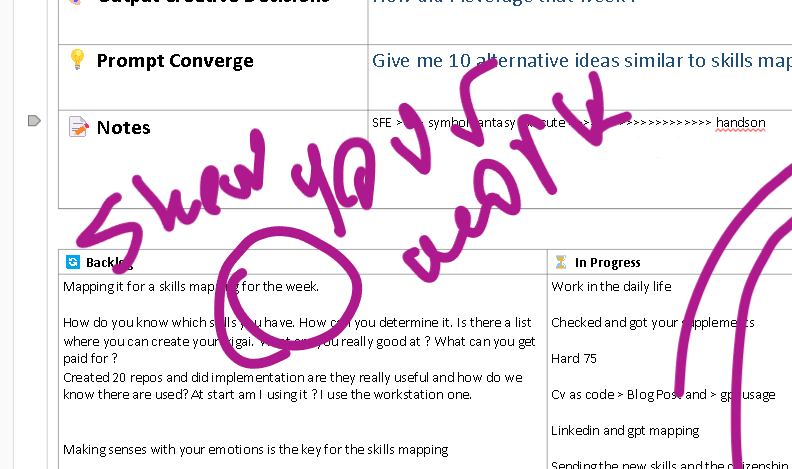
turn on and move on
Output
`To integrate dramatic events and sequences based on the Hero’s Journey into the script, we can enhance the narrative by weaving in personal transformation, conflicts, moments of crisis, and eventual resolution. Here's a revised version that incorporates these elements for a more impactful, emotionally engaging delivery:
Title: Unlock Your Potential: How to Map Skills for a Lifelong Learning Journey
Opening Scene: The Ordinary World
(Scene opens with upbeat music. Rifat stands in front of a whiteboard with motivational posters on the walls. Three BANGS echo: "Potential," "Skills," "Learning Journey.")
Rifat (on-camera):
(Rifat picks up his phone as it rings.)
"Ring, ring… the recruiter calls. You answer, scrambling to remember if you know what 'cross-plane' even means. Erdem tries to make sense of it, Googling frantically in the background. And just like that, the moment of truth comes. No GPT to save the day, no shortcuts. You say 'Yes!' just to land the role. But deep down, you wonder: Are you ready to survive in this rapidly shifting world?
Today, we’re diving into the hero's call – unlocking your potential by mapping your skills for this modern battlefield of work. The world is changing, AI is rising, and you need to survive, thrive, and evolve. But how? With skill mapping, you not only navigate the chaos but turn it into opportunity. You don’t just exist; you learn, grow, and leap from one role to the next, armed with new skills, ready to confront an uncertain future."
(Cut to dramatic visuals of a Hydra with its heads multiplying as Rifat speaks.)
Rifat (on-camera):
"Every day feels like a battle. The Hydra of the modern workplace sprouts new challenges at every corner. But you can defeat it. Every cry as a head gets cut is an opportunity to evolve. It’s not about holding onto the past, it’s about mastering the future. For those like me, it’s a story of transformation, resilience, and constant reinvention."
Scene 2: The Call to Adventure – Introduction to Skill Mapping
(The camera zooms in on a blank skill map at the center of the screen, with "You" in the middle, ready to build skills outwards.)
Rifat (on-camera):
"Let’s talk about skill mapping. Imagine yourself at the center of your own hero's journey. Your skills branch out like roads on a map, guiding you toward your future. But here’s the twist – the path is not laid out for you. Every day brings a new twist, a new technology, a new challenge. You’re not just a worker, you’re a lifelong learner, constantly building and evolving your skill set."
(Cut to animation of new skills like "Coding," "AI Development," and "Communication" branching out from the center.)
Rifat (voice-over):
"Skill mapping is about showing your work constantly. Just like the hero’s journey, you must face each new obstacle head-on, learning and adapting as you go. It’s not just about keeping up with trends – it’s about thriving in the face of them. Create your own courses, review your progress, and iterate like a master craftsman honing their tools. Be ready for the inevitable call to adventure that will shake up everything you know."
Scene 3: Crossing the Threshold – Embracing the Challenges
(Rifat back on-screen, speaking directly to the camera as the environment darkens slightly, showing the weight of the challenge ahead.)
Rifat (on-camera):
"Why push yourself? Why strive to learn every day when the world feels stacked against you? Because we're heroes on a journey. Life isn’t about giving up and settling. It’s about going beyond, linking what we love to what the world needs. I once dreamed of working in Switzerland – now, my work has made that dream a reality. Tomorrow, it might be Denmark. The path is never clear, but every step forward is progress."
(The screen splits, showing Rifat on one side working at a desk, and on the other side, dreamlike images of countries, opportunities, and possibilities flash.)
Rifat (on-camera):
"Each new opportunity, each new role is a step deeper into the unknown, but that’s how we grow. This is where skill mapping becomes your lifeline, helping you navigate uncertain waters with confidence."
Scene 4: Tests, Allies, and Enemies – The Hero's Struggle
(Rifat stands in front of the whiteboard again, this time with 4 steps written: 1. Identify Current Skills, 2. Research Emerging Skills, 3. Set Learning Goals, 4. Create an Action Plan.)
Rifat (on-camera):
"Let’s break down the battle plan. Step one: Identify your current skills. What can you wield right now in this chaotic world? Step two: Research emerging skills. The market is always shifting – you need to stay ahead. Step three: Set clear learning goals. Where do you want to be in 1 year? 5 years? Step four: Create an action plan to execute. Every hero needs a plan."
(Cut to a close-up of Rifat’s journal as he writes down his learning goals, showing his commitment to the path ahead.)
Act 2: The Ordeal – Confronting the Ultimate Challenge
- Setting: A scene in Rifat’s home, where his daughter struggles with math.
- Symbolism: Her frustration mirrors Rifat’s internal conflict, as he too grapples with his challenges at work.
- Conflict: Rifat realizes the disconnect between traditional learning and real-world skills. He sees this gap in his daughter's math problem and his own career hurdles.
- Transformation: Rifat understands that AI, automation, and constant skill upgrades are the bridges that will help him – and his daughter – cross into the future.
Rifat (on-camera):
"At work, I face engineering problems. At home, I help my daughter with her multiplication tables. Both are challenges that need different skills – but the struggle is the same. Life isn’t about mastering one area – it’s about becoming adaptable, evolving in every direction."
Scene 5: The Road Back – Staying Motivated
(Rifat sits in a cozy reading nook, holding a book on "Antifragility.")
Rifat (on-camera):
"The key to lifelong learning? Letting go. It’s not about what you’ve already mastered, but what you’re willing to learn next. I’ve had to let go of things I thought I couldn’t live without. Studios, gadgets, outdated knowledge. It’s hard, but it’s necessary. Every hero must shed their old skin to embrace what’s next."
(Cut to Rifat reflecting on past failures and the lessons learned from them.)
Act 3: The Return – Bringing Knowledge Back to the Community
Rifat (on-camera):
"So, what are you waiting for? Start mapping your skills today. Every failure is a lesson. Every new skill brings you closer to who you’re meant to be. The hero’s journey is not about arriving – it’s about continuously moving forward. AI and automation are tools you can wield, but you must first learn to wield them. Join me, and together, we’ll chart a course for lifelong success."
Scene 6: The Call to Action
Rifat (on-camera):
"If you found this video helpful, don’t forget to like, share, and subscribe. The world is changing fast – but with the right tools, the right skills, and the right mindset, you can keep up. Keep learning. Keep evolving. The hero’s journey never ends, and neither does your potential."
(Cue energetic outro music. On-screen text: "Subscribe & Join the Learning Journey!")
Conclusion:
The new version emphasizes a Hero’s Journey framework with dramatic sequences where the protagonist (Rifat) encounters challenges, finds mentors, battles internal and external obstacles, and eventually emerges stronger. By framing the video as a transformative journey, the narrative engages the audience emotionally, inspiring them to take action and start their own lifelong learning adventure.`
Imported from rifaterdemsahin.com · 2024